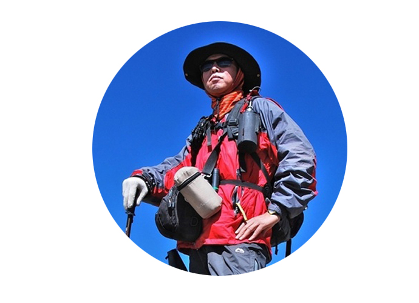

杨洁，出生于1981年。北京服装学院教师，YANGJIE DESIGN高端设计师品牌创始人。
[详细]
2016-04-20 16:07
全球第一位在世界范围考察和徒步古道的户外探索者。
[详细]
2015-10-23 13:58
常年在外拍片并撰写旅游类文章给多家纸媒体供稿。
[详细]
2015-10-23 11:29
有别于精致浪漫的希腊岛屿，雅典是一个国家化的大都市，有超过1/3希腊人口居住于此。
[详细]
2015-10-21 11:24
罗马这座古老，神秘，浪漫的“永恒之城”里，每一座教堂，每一条道路都有它的故事。
[详细]
2015-10-21 11:11
被香港人赋予美名“满地可”的这座北美东岸都市，地处加拿大魁北克省南部。
[详细]
2015-10-20 18:39

年轻时什么都学，后以46岁的“高龄”开始接触户外。
[详细]
2015-10-16 17:16
行者风雷，2001年-2014年足迹遍布祖国大陆和港澳台地区。
[详细]
2015-10-16 17:10
格林蔓-施路远设计和咨询有限公司首席设计师。
[详细]
2015-09-01 16:54
展示LONELY PLANET 和穷游锦囊以外的世界。
[详细]
2015-11-03 14:33
兰陵美酒郁金香，玉碗盛来琥珀光。但使奇珍能醉客……
[详细]
2015-10-23 15:02
登顶七大洲最高峰，徒步抵达南北极点。毕业于北京大学。
[详细]
2015-10-23 13:45
23岁开始独自远行，九年来足迹遍布五大洲。
[详细]
2015-10-23 11:11
普罗旺斯，是”山居岁月”作者梅尔眼中充满着诗情画意的一个南法大区。
[详细]
2015-10-21 11:21
那么吉隆坡---马来西亚首都及最大城市---则是多样化元素相互碰撞后的精髓所在。
[详细]
2015-10-20 18:53
让我来为大家揭示下斯京（居住在斯德哥尔摩的华人对它的一个简称）独特的一面吧。
[详细]
2015-10-20 18:30
知名商业摄影师，汽车摄影师，职业撰稿人，自媒体人。
[详细]
2015-10-16 17:14
在古巴的各方面都有别人不能达到的造诣。
[详细]
2015-09-01 17:13
一个兴趣很杂、喜欢用图片记录旅行的自助游爱好者。
[详细]
2015-11-03 14:11
轻度人生思考者，中度AIRBNB民宅住宿爱好者。
[详细]
2015-10-23 14:04
跟她同行过的客人，无不被她的细心，乐观，负责而打动。
[详细]
2015-10-23 13:42
笔名方圆，文风犀利、擅于评论，从业至今重大报道屡见报端。
[详细]
2015-09-01 17:13
水，赋予这个世界上每一个城市灵性，曼哈顿的灵性便来自于哈德逊河。
[详细]
2015-10-21 11:18
如果说皇后镇是在炫耀大自然赐予的美丽，一点也不为过。
[详细]
2015-10-20 18:49
新加坡是一个现代化的都市，在钢筋水泥的城市面目之后，其实散发着浓郁的的南洋风情。
[详细]
2015-10-20 18:35
资深户外旅游媒体人，奢华酒店控，私人旅行顾问。
[详细]
2015-10-16 17:15
文化传媒工作者，翻译；英国、塞舌尔旅游专家。
[详细]
2015-10-03 14:04
范毅波：笔名七色地图，职业旅行家、旅行作家。
[详细]
2015-11-03 14:09

视行走为一种生活方式，不刻意，只是自然而然。
[详细]
2015-10-23 14:00
带着相机去旅行，听从内心的声音是唯一的原则和信仰。
[详细]
2015-10-23 12:58
一提到悉尼，相信大家十之八九浮现在脑海的都是歌剧院和海港大桥。
[详细]
2015-10-21 11:27
俄罗斯，东临太平洋的波涛，西望大西洋的落日，横跨欧亚，幅员辽阔。
[详细]
2015-10-21 11:15
准备来布宜诺斯艾利斯旅游的人，建议先看一看王家卫的《春光乍泄》。
[详细]
2015-10-20 18:43
巴黎是一场流动的盛宴，数百年流转的时光，将这座城市雕琢成了一件洛可可风格的艺术品。
[详细]
2015-10-20 18:21
朝气蓬勃的白羊座，锡兰小岛最好玩的她都知道!
[详细]
2015-10-16 15:38